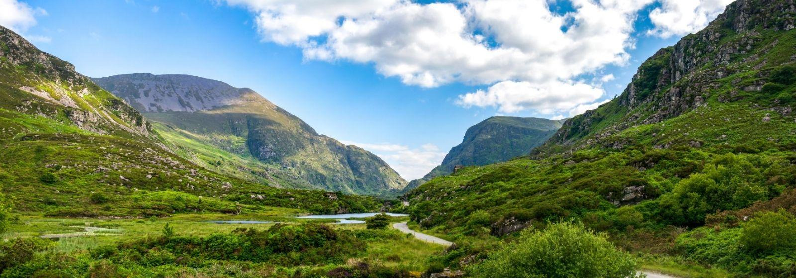
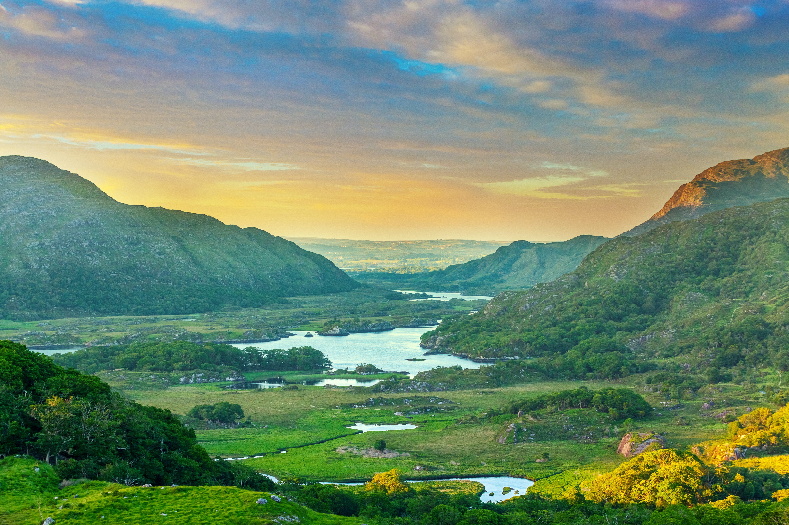
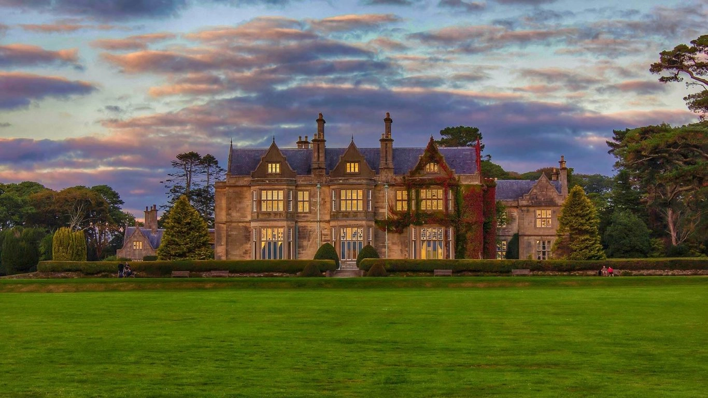
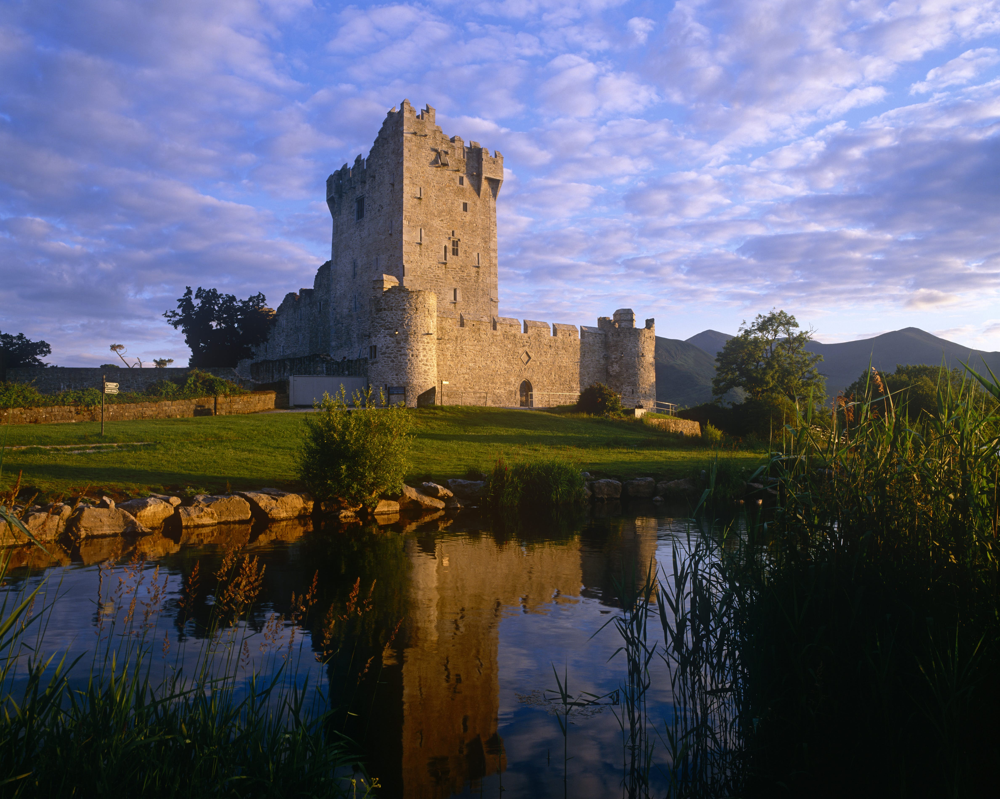
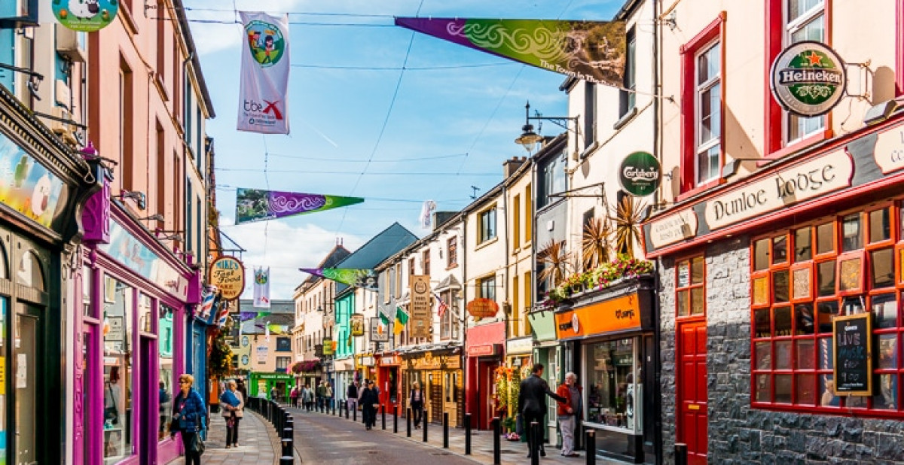

DISCOVER KILLARNEY
KILLARNEY
Nestled in a valley surrounded by the magnificent McGillycuddy Reeks, Ireland’s highest mountain range, is the vibrant town of Killarney. At the foot of these mountains lies thousands of acres of National Park comprising of the world famous lakes of Killarney, ancient woodlands, waterfalls and pristine parkland. This is what gives Killarney its extraordinary and magical beauty. But there is so much more to Killarney than its beauty, you will feel instantly at home here because of the town’s unrivalled tradition of hospitality, a tradition that extends back hundreds of years to when Killarney people first began welcoming visitors their town. Whether you are looking for adventure or exploration, looking to reconnect or time out, bonding with family or celebrating with friends, Killarney has an experience for you. Killarney time is your time.
KILLARNEY NATIONAL PARK
Killarney National Park is the largest and oldest national park in Ireland. It contains spectacular mountains, woodlands and lakes. The combination of mountains and valleys, lakes and islands, rivers, waterfalls, bogs and woodlands forges a distinctive and beautiful landscape, unique to this beautiful region. The highest mountain range in Ireland, McGillycuddy’s Reeks, are contained within the park, complemented by the world-famous lakes of Killarney. We are lucky to have one of the most impressive parts of Ireland’s natural history on our doorstep.
MUCKROSS HOUSE
The focal point of the national park is Muckross House with its surrounding gardens and traditional farm. This 19th century Victorian mansion is designed and decorated in a traditional style giving you the opportunity to step back in time. The rooms are furnished in period style and allows you to admire the elegant lifestyle of the 19th-century upper classes in Killarney. Muckross Traditional Farm is preserved as a snapshot of a time before farming relied on electricity and all work was carried out using traditional methods.
ROSS CASTLE
Home to Chieftan O’Donoghue Mór, and built in the 15th century, Ross Castle was one of the last Gaelic strongholds in Ireland. Located on the shores of Lough Leane, it is a fine example of a 15th century stone tower house. Ownership of the castle was contested in the 17th & 18th century with both Gaelic Irish and Cromwellian forces fighting for it. In later times, the castle was owned by the Earls of Kenmare until 1956 when they kindly donated it to the people of Ireland. Since its restoration in 1990, the castle can be visited by the public, where they admire the period wooden furniture, traditional décor and the wonderful architecture. From here you can get a boat over to Innisfallen Island to see the 12th Century Monastic ruin and then continue on to the gap of Dunloe.
KILLARNEY TOWN CENTRE
Killarney is a small place (only around 15,000 people live here year-round) but the town comes alive during the warmer months and thrives on tourism. Our ‘little’ town is as popular with locals and visitors with shopping, bars, restaurants and attractions to suit every taste. Surrounded by rolling green hills, beautiful lakes and a fascinating cultural heritage to rival any large city, a trip into town is a must-do on your travels to Killarney.
